このホームページで、ご自身で直してよいのは「目印」がついている所だけです。直せるのは次の2つです。
※このマニュアルは、ホームページの静的サイト版（HTMLのファイル）で作った見本です。公開中の本番（WordPress版）は、同じ見た目をWordPressのテーマのファイルで出しているため、直す場所が異なります。
ホームページは5つのページでできていて、1ページが1つのファイルです。
| ページ | ファイル |
|---|---|
| TOP | index.html |
| 私たちについて | about/index.html |
| 事業内容 | service/index.html |
| 会社概要 | company/index.html |
| お問い合わせ | contact/index.html |
どのファイルも名前は index.html です。フォルダの名前（about・service など）でページを見分けてください。画像は assets フォルダにまとめて入っていて、5つのページで共通に使います。
目印は、各ファイルの中に、次のような一行で入っています。
共通の部品は、1か所直したら5つのファイル全部を直します。
ヘッダー（ロゴ・メニュー・CONTACT ボタン）、スマホのメニュー、フッター（所在地・電話番号・コピーライトなど）は、5つのファイルにそれぞれ同じものが入っています。1つのファイルを直しても、ほかのページは変わりません。同じ番号を5つのファイルで探して、全部同じように直してください。
また、電話番号・所在地・会社名などは、共通の部品のほかに TOP の会社概要、会社概要ページ、お問い合わせページにも書いてあります。表の注意書き（「ほかに〜にもある」）を見て、もれなく直してください。
作業の前に、必ず控えを取ってください。
index.html と about・assets などが入っているフォルダ）を、まるごとコピーします（Macは右クリック→「複製」、Windowsはコピーして貼り付け）。用意するもの
< と > で囲まれた部分（タグ）は、そのままにしてください。
上の例は、E34（TOPの ABOUT US の本文2）です。<wbr> は「ここで折り返してよい」、<br> は「ここで必ず改行」の印です。
目印と一覧表には、文字数の目安を書いてあります。文字数は、全角の1文字を1字と数えます。「、」「。」「 」も1字、半角の英数字も1字として数えます（半角のほうが幅が狭いので、安全側です）。
| 表示 | 意味 |
|---|---|
| 現状○字→安全△字 | △字までなら、行が増えず、見た目がほとんど変わりません。迷ったらこの数字までにしてください。 |
| （限界□字） | 行が増えても、ほかの文字・イラスト・枠に被らず、画面からはみ出さなかった字数です。 |
| （限界なし） | 今の文字数＋60字まで伸ばしても崩れなかった所です。行が増えて、その下がページの下へ押し下がるだけです。長くしすぎると読みにくくなるので、ほどほどに。 |
| ○字まで | 安全と限界が同じ所です。この字数までにしてください。 |
| 現状○字のまま | これ以上は増やせません（余裕がない所です）。 |
| 2行／1行め・2行め | <br> で区切った行ごとの目安です。 |
この数字は、スマホ（360×640、390×540）とPC（1280×720）の3つの画面の大きさで、実際に表示して、文の最後に文字を足して測りました（3つのうち、いちばん厳しい数字）。ほかの大きさの画面（とくに幅1600以上の大きな画面）では少し変わることがあります。画面に出ない設定（タブ名・説明文）の字数は、一般的な目安で、実測ではありません。
<span class="cl">〜</span> は、言葉のまとまり（文節）です。行の折り返しは、このまとまりの切れ目で起きます。中の文字だけを直し、タグは残します。新しく文を足すときは、まとまりの中に足すか、同じ形の <span class="cl">足す文</span> を作ります。<span class="nb">〜</span> は、途中で折り返さないまとまりです。中を長くすると画面の右にはみ出すことがあるので、目安を必ず守ってください。<wbr> は「ここで折り返してよい」、<br> は「ここで必ず改行」です。<br> を足すと行が増えます。& を書きたいときは & と書きます。< や > を文字として書くことはできません。画像は、同じファイル名・同じ縦横比・同じ形式で、上書きするのがいちばん簡単で安全です。目印やファイルの文を書き換える必要はありません。
assets/svc_01.webp）、縦横比、大きさが書いてあります。squoosh.app）が使えます。画像を画面にドラッグし、右側の形式で「WebP」を選び、品質を75〜80くらいにして、「リサイズ」で元と同じ大きさ（幅×高さ）にそろえ、右下のダウンロードを押します。（ツールの画面は変わることがあります。表示が違うときは担当者にご相談ください。）svc_01.webp のように元と同じにして、assets フォルダに入れ、「置き換える」を選びます。上書きの前に、控えを取ってあることを確かめてください。知っておくと安心なこと
alt="〜"）が付いている画像は、内容を変えたら、この文も新しい画像に合わせて直してください（目の見えない方の読み上げや検索に使われます）。width・height や src も直す必要があります。担当者にご相談ください。assets には、今は使っていない画像（chara_dog.webp・chara_shovel.webp・chara_worker.webp）と、シェア用の画像（ogp.jpg。本番のWordPress版で使用）も入っています。消さずにそのまま置いておいてください。画面のオレンジの番号が文言、青い番号が画像です。画面と同じ番号が、その下の表にあります。スクロールするページなので、ページ全体をスマホ（幅390）とPC（幅1280）で撮り、長いページは上から順に区切って並べています。各ページのヘッダーとフッターは共通の部品なので、番号は「4-6．ページ共通」にまとめています。
ファイル：index.html
スマホ（幅390） 上から順に4枚に区切っています
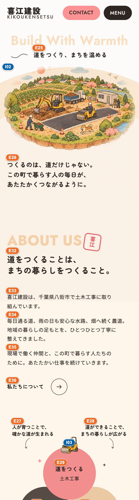
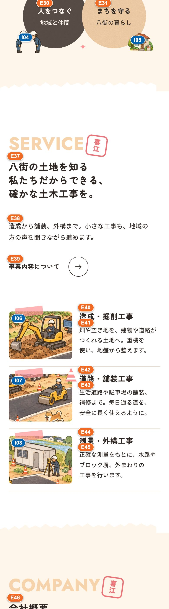
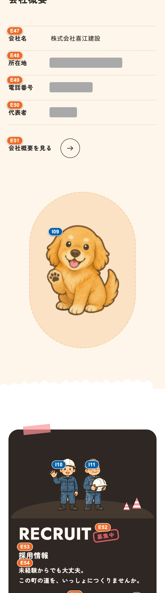
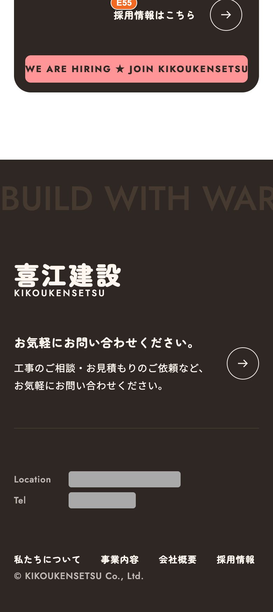
PC（幅1280） 上から順に4枚に区切っています
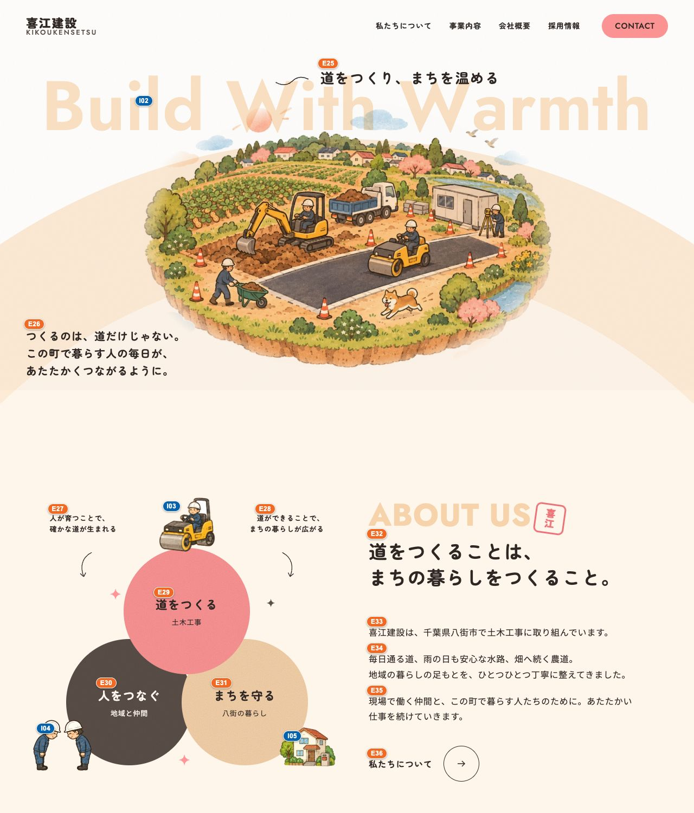
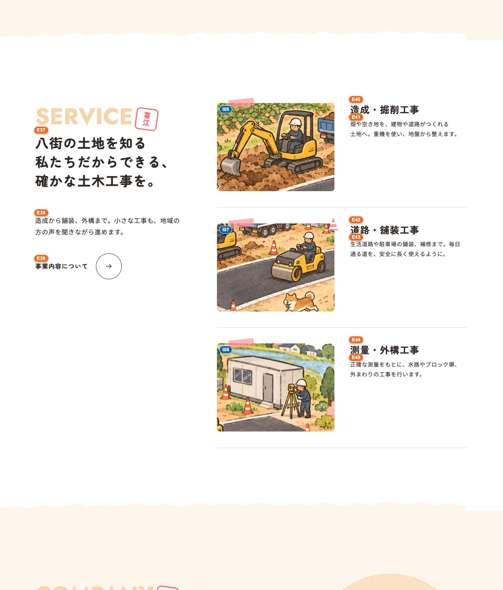
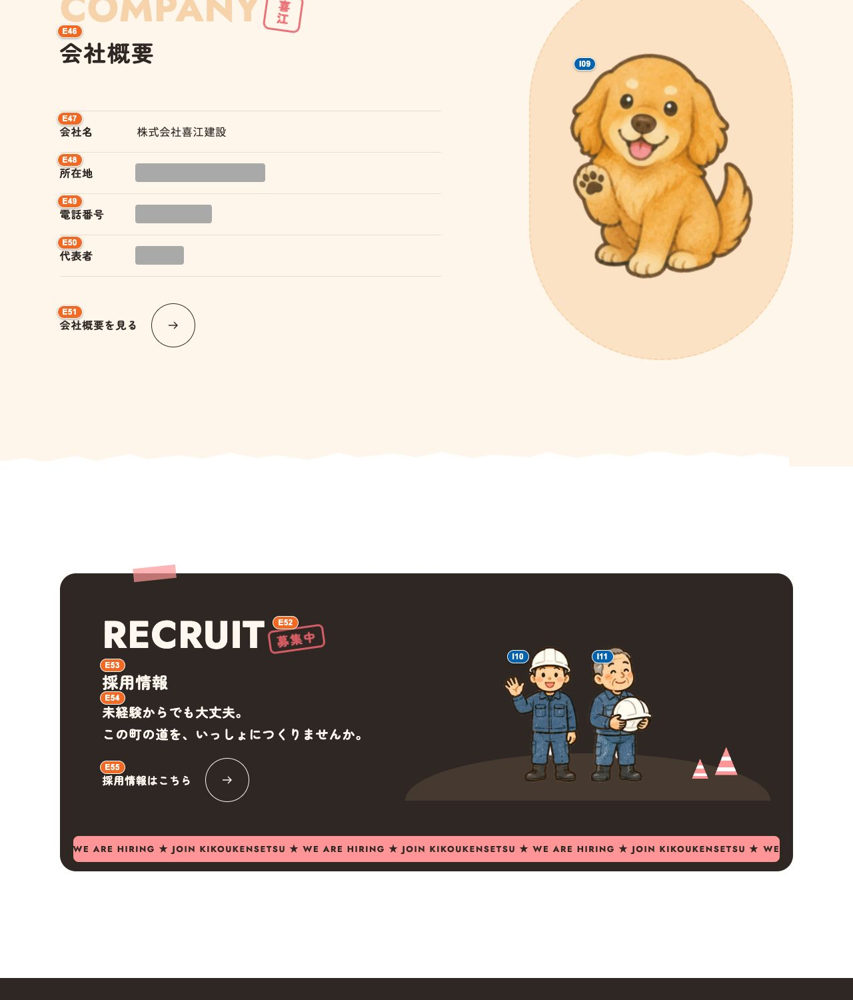
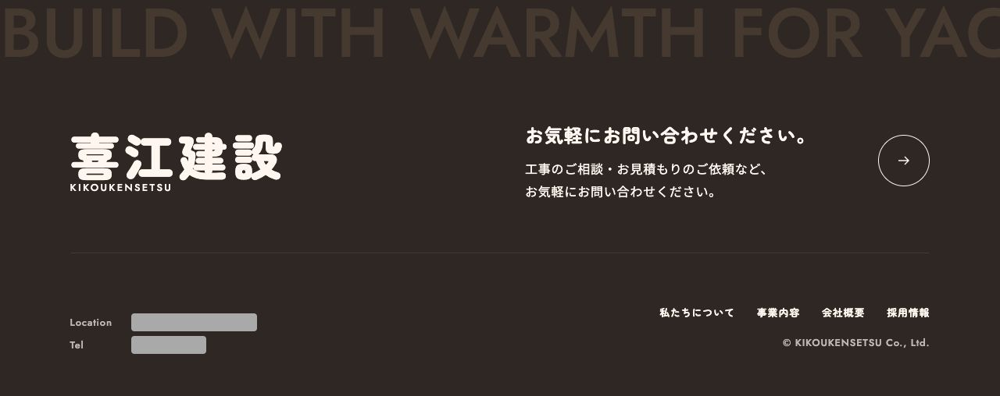
| 番号 | 場所 | 今の文言（冒頭） | 文字数の目安 |
|---|---|---|---|
| E25 | 最初の画面のキャッチsvgの絵(<svg>〜</svg>)は消さない1文字ずつ出る動きは自動でつく | 道をつくり、まちを温める | 現状12字→16字まで |
| E26 | 最初の画面の文行の数は変えない・行の終わりの<br>は残す | つくるのは、道だけじゃない。 この町で暮らす… | 1行め：現状14字→安全17字(限界なし) 2行め：現状13字→安全17字(限界なし) 3行め：現状13字→安全17字(限界なし) |
| E27 | 3つの円の左上の言葉行の終わりの<br>は残す | 人が育つことで、確かな道が生まれる | 1行め：現状8字→10字まで 2行め：現状9字のまま |
| E28 | 3つの円の右上の言葉行の終わりの<br>は残す | 道ができることで、まちの暮らしが広がる | 1行め：現状9字→10字まで 2行め：現状10字(安全はこのまま・限界12字) |
| E29 | 3つの円(上)の文字円の大きさは決まっているので、字数は増やさないのが安全 | 道をつくる／土木工事 | 大きい字：現状5字→安全8字(限界24字) 小さい字：現状4字→安全9字(限界33字) |
| E30 | 3つの円(左)の文字円の大きさは決まっているので、字数は増やさないのが安全 | 人をつなぐ／地域と仲間 | 大きい字：現状5字→安全8字(限界22字) 小さい字：現状5字→安全9字(限界12字) |
| E31 | 3つの円(右)の文字円の大きさは決まっているので、字数は増やさないのが安全 | まちを守る／八街の暮らし | 大きい字：現状5字→安全8字(限界24字) 小さい字：現状6字→安全9字(限界21字) |
| E32 | ABOUT US の見出し<span class="nb">〜</span> は折り返さないまとまり<br>は残す | 道をつくることは、まちの暮らしをつくること。 | 1行め：現状9字→13字まで 2行め：現状13字(安全はこのまま・限界20字) |
| E33 | ABOUT US の本文1<wbr>は「ここで折り返してよい」の印。残す | 喜江建設は、千葉県八街市で土木工事に取り組ん… | 現状27字→安全30字(限界なし) |
| E34 | ABOUT US の本文2<wbr>は「ここで折り返してよい」の印。残す<br>は残す | 毎日通る道、雨の日も安心な水路、畑へ続く農道… | 1行め：現状23字(安全はこのまま・限界なし) 2行め：現状29字→安全30字(限界なし) |
| E35 | ABOUT US の本文3<wbr>は「ここで折り返してよい」の印。残す | 現場で働く仲間と、この町で暮らす人たちのため… | 現状40字→安全41字(限界なし) |
| E36 | ボタン「私たちについて」svgの絵(<svg>〜</svg>)は消さない | 私たちについて | 現状7字→安全17字(限界なし) |
| E37 | SERVICE の見出し<span class="nb">〜</span> は折り返さないまとまり<br>は残す | 八街の土地を知る私たちだからできる、確かな土… | 1行め：現状8字→10字まで 2行め：現状10字のまま 3行め：現状9字→10字まで |
| E38 | SERVICE の本文<wbr>は残す | 造成から舗装、外構まで。小さな工事も、地域の… | 現状36字→安全40字(限界なし) |
| E39 | ボタン「事業内容について」svgの絵(<svg>〜</svg>)は消さない | 事業内容について | 現状8字→安全17字(限界なし) |
| E40 | SERVICE の小見出し1事業内容ページの小見出しと同じ言葉 | 造成・掘削工事 | 現状7字→安全9字(限界なし) |
| E41 | SERVICE の説明1<wbr>は残す | 畑や空き地を、建物や道路がつくれる土地へ。重… | 現状36字→安全37字(限界なし) |
| E42 | SERVICE の小見出し2事業内容ページの小見出しと同じ言葉 | 道路・舗装工事 | 現状7字→安全9字(限界なし) |
| E43 | SERVICE の説明2<wbr>は残す | 生活道路や駐車場の舗装、補修まで。毎日通る道… | 現状36字(安全はこのまま・限界なし) |
| E44 | SERVICE の小見出し3事業内容ページの小見出しと同じ言葉 | 測量・外構工事 | 現状7字→安全9字(限界なし) |
| E45 | SERVICE の説明3<wbr>は残す | 正確な測量をもとに、水路やブロック塀、外まわ… | 現状32字→安全37字(限界なし) |
| E46 | COMPANY の見出し | 会社概要 | 現状4字→安全13字(限界なし) |
| E47 | 会社概要の表「会社名」会社概要ページの表にも同じ項目がある | 会社名／株式会社喜江建設 | 項目名：現状3字→安全5字(限界なし) 内容：現状8字→安全14字(限界なし) |
| E48 | 会社概要の表「所在地」会社概要ページの表にも同じ項目がある | 所在地／（所在地） | 項目名：現状3字→安全5字(限界なし) 内容：現状14字→安全17字(限界なし) |
| E49 | 会社概要の表「電話番号」会社概要ページの表にも同じ項目がある | 電話番号／（電話番号） | 項目名：現状4字→安全5字(限界なし) 内容：現状12字→安全20字(限界なし) |
| E50 | 会社概要の表「代表者」会社概要ページの表にも同じ項目がある | 代表者／（代表者名） | 項目名：現状3字→安全5字(限界なし) 内容：現状4字→安全14字(限界なし) |
| E51 | ボタン「会社概要を見る」svgの絵(<svg>〜</svg>)は消さない | 会社概要を見る | 現状7字→安全17字(限界なし) |
| E52 | 採用カードの札「募集中」札の大きさは決まっている | 募集中 | 現状3字→8字まで |
| E53 | 採用カードの見出し | 採用情報 | 現状4字→安全15字(限界なし) |
| E54 | 採用カードの文<span class="cl">〜</span> は折り返しのまとまり。タグは残し、中の文字だけ直す<br>は残す | 未経験からでも大丈夫。この町の道を、いっしょ… | 1行め：現状11字→安全18字(限界なし) 2行め：現状20字(安全はこのまま・限界なし) |
| E55 | 採用カードのボタンsvgの絵(<svg>〜</svg>)は消さない | 採用情報はこちら | 現状8字→安全14字(限界なし) |
| 番号 | 場所 | ファイル | 縦横比・サイズ |
|---|---|---|---|
| I02 | 最初の画面のイラスト | assets/fv.webp | 縦横比 3:2・推奨 1536×1024px(元と同じ)・WebP・容量281KB表示は最大 約795×530px(3つの画面の大きさで測った中で最大) |
| I03 | 3つの円(上)のイラスト | assets/chara_roller.webp | 縦横比 横長 約1.02:1・推奨 441×431px(元と同じ)・背景が透明なWebP・容量45KB表示は最大 約314×307px(3つの画面の大きさで測った中で最大)人物などの切り抜きは、背景を透明にした画像で作る(背景が付いていると四角く見える)同じファイルが 私たちについて(強み01のイラスト)・事業内容(ページ上部のイラスト) でも使われている(1回の差し替えで全部変わる) |
| I04 | 3つの円(左)のイラスト | assets/chara_bow.webp | 縦横比 横長 約1.14:1・推奨 413×363px(元と同じ)・背景が透明なWebP・容量31KB表示は最大 約349×307px(3つの画面の大きさで測った中で最大)人物などの切り抜きは、背景を透明にした画像で作る(背景が付いていると四角く見える)同じファイルが 私たちについて(ページ上部のイラスト)・私たちについて(強み02のイラスト) でも使われている(1回の差し替えで全部変わる) |
| I05 | 3つの円(右)のイラスト | assets/chara_house.webp | 縦横比 横長 約1.42:1・推奨 500×352px(元と同じ)・背景が透明なWebP・容量52KB表示は最大 約436×307px(3つの画面の大きさで測った中で最大)人物などの切り抜きは、背景を透明にした画像で作る(背景が付いていると四角く見える)同じファイルが 会社概要(ページ上部のイラスト) でも使われている(1回の差し替えで全部変わる) |
| I06 | SERVICE の写真1 | assets/svc_01.webp | 縦横比 4:3・推奨 800×600px(元と同じ)・WebP・容量80KB表示は最大 約530×398px(3つの画面の大きさで測った中で最大)枠の縦横比は4:3・写真は枠に合わせて中央が自動で切り取られる同じファイルが 事業内容(工事01の写真) でも使われている(1回の差し替えで全部変わる) |
| I07 | SERVICE の写真2 | assets/svc_02.webp | 縦横比 4:3・推奨 800×600px(元と同じ)・WebP・容量82KB表示は最大 約482×362px(3つの画面の大きさで測った中で最大)枠の縦横比は4:3・写真は枠に合わせて中央が自動で切り取られる同じファイルが 事業内容(工事02の写真) でも使われている(1回の差し替えで全部変わる) |
| I08 | SERVICE の写真3 | assets/svc_03.webp | 縦横比 4:3・推奨 800×600px(元と同じ)・WebP・容量65KB表示は最大 約530×398px(3つの画面の大きさで測った中で最大)枠の縦横比は4:3・写真は枠に合わせて中央が自動で切り取られる同じファイルが 事業内容(工事03の写真) でも使われている(1回の差し替えで全部変わる) |
| I09 | 会社概要の看板犬 | assets/dog_retriever.webp | 縦横比 縦長 約1:1.23・推奨 520×641px(元と同じ)・背景が透明なWebP・容量42KB表示は最大 約275×338px(3つの画面の大きさで測った中で最大)人物などの切り抜きは、背景を透明にした画像で作る(背景が付いていると四角く見える)同じファイルが 会社概要(看板犬) でも使われている(1回の差し替えで全部変わる) |
| I10 | 採用カードのイラスト(手を振る若手) | assets/chara_wave.webp | 縦横比 縦長 約1:1.82・推奨 219×398px(元と同じ)・背景が透明なWebP・容量24KB表示は最大 約113×204px(3つの画面の大きさで測った中で最大)人物などの切り抜きは、背景を透明にした画像で作る(背景が付いていると四角く見える)同じファイルが 共通(スマホのメニューの中のイラスト) でも使われている(1回の差し替えで全部変わる) |
| I11 | 採用カードのイラスト(ベテラン) | assets/chara_senior.webp | 縦横比 縦長 約1:2.09・推奨 191×399px(元と同じ)・背景が透明なWebP・容量23KB表示は最大 約147×307px(3つの画面の大きさで測った中で最大)人物などの切り抜きは、背景を透明にした画像で作る(背景が付いていると四角く見える)同じファイルが お問い合わせ(ページ上部のイラスト) でも使われている(1回の差し替えで全部変わる) |
ファイル：about/index.html
スマホ（幅390） 上から順に2枚に区切っています
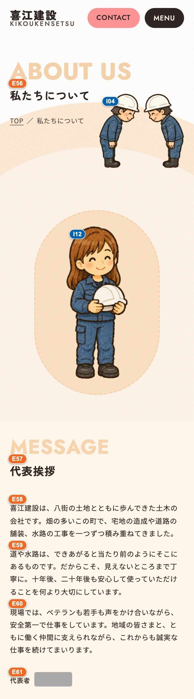
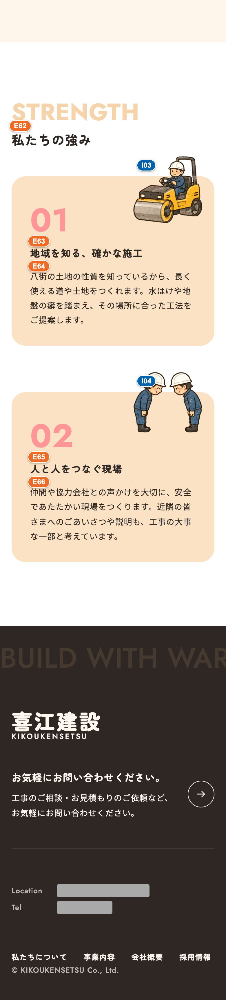
PC（幅1280） 上から順に2枚に区切っています
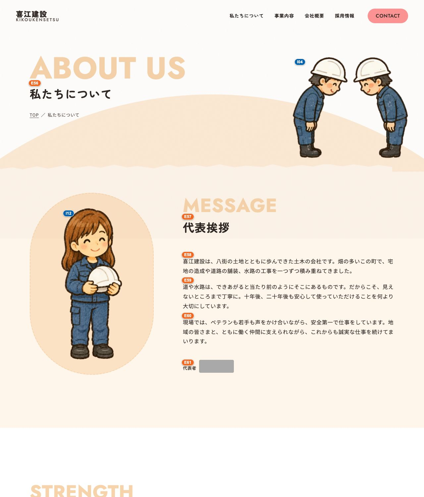
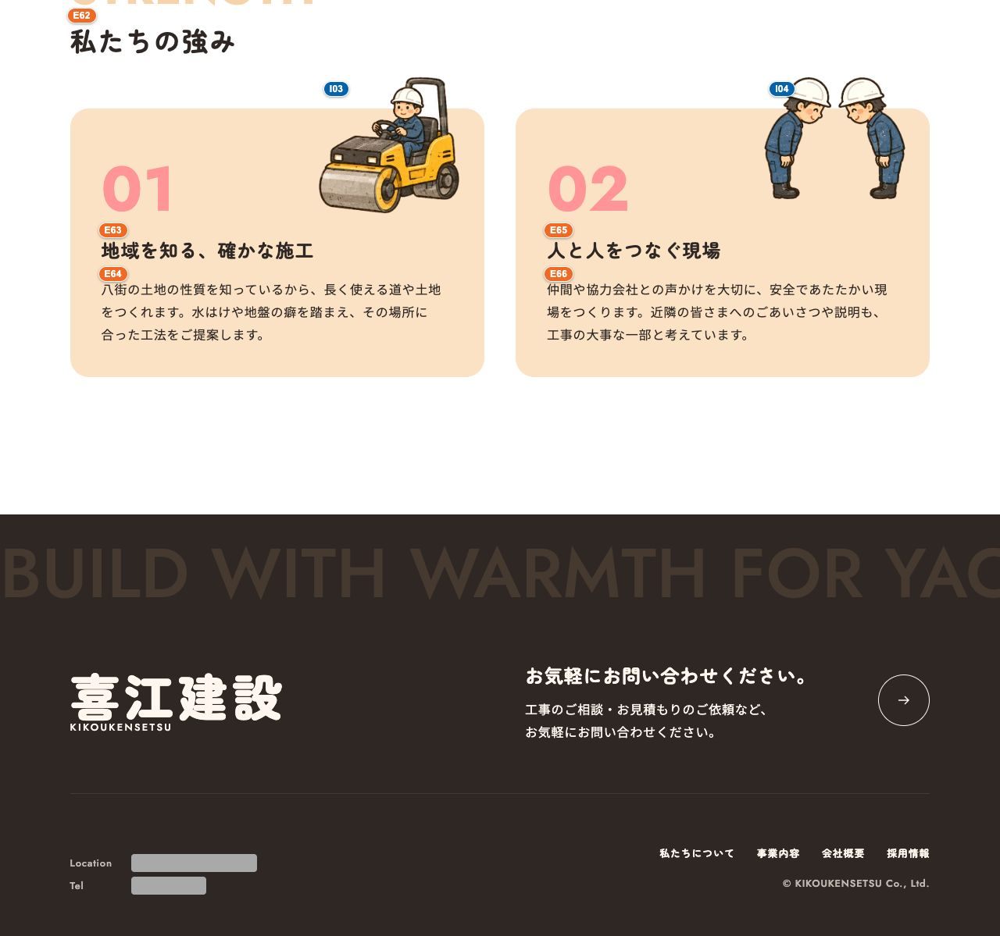
| 番号 | 場所 | 今の文言（冒頭） | 文字数の目安 |
|---|---|---|---|
| E56 | ページの見出しとパンくず見出しとパンくずの2か所を同じ言葉にメニューの名前・ページの題名(<title>)と合わせると分かりやすい上の英字は飾り | 私たちについて／私たちについて | 見出し：現状7字のまま パンくず(TOP／の後)：現状7字のまま |
| E57 | 代表挨拶の見出し | 代表挨拶 | 現状4字→安全13字(限界なし) |
| E58 | 代表挨拶の本文1<span class="cl">〜</span> は折り返しのまとまり。タグは残し、中の文字だけ直す | 喜江建設は、八街の土地とともに歩んできた土木… | 現状69字(安全はこのまま・限界なし) |
| E59 | 代表挨拶の本文2<span class="cl">〜</span> は折り返しのまとまり。タグは残し、中の文字だけ直す | 道や水路は、できあがると当たり前のようにそこ… | 現状85字→安全92字(限界なし) |
| E60 | 代表挨拶の本文3<span class="cl">〜</span> は折り返しのまとまり。タグは残し、中の文字だけ直す | 現場では、ベテランも若手も声をかけ合いながら… | 現状81字→安全84字(限界なし) |
| E61 | 代表挨拶の署名(肩書き・名前) | 代表者／（代表者名） | 肩書き：現状3字→安全17字(限界なし) 名前：現状4字→安全15字(限界なし) |
| E62 | 強みの見出し | 私たちの強み | 現状6字→安全13字(限界なし) |
| E63 | 強み01の小見出し | 地域を知る、確かな施工 | 現状11字→安全14字(限界なし) |
| E64 | 強み01の本文<span class="cl">〜</span> は折り返しのまとまり。タグは残し、中の文字だけ直す | 八街の土地の性質を知っているから、長く使える… | 現状64字→安全68字(限界なし) |
| E65 | 強み02の小見出し | 人と人をつなぐ現場 | 現状9字→安全14字(限界なし) |
| E66 | 強み02の本文<span class="cl">〜</span> は折り返しのまとまり。タグは残し、中の文字だけ直す | 仲間や協力会社との声かけを大切に、安全であた… | 現状68字→安全76字(限界なし) |
| 番号 | 場所 | ファイル | 縦横比・サイズ |
|---|---|---|---|
| I03 | 強み01のイラスト | assets/chara_roller.webp | 縦横比 横長 約1.02:1・推奨 441×431px(元と同じ)・背景が透明なWebP・容量45KB表示は最大 約314×307px(3つの画面の大きさで測った中で最大)人物などの切り抜きは、背景を透明にした画像で作る(背景が付いていると四角く見える)同じファイルが TOP(3つの円(上)のイラスト)・事業内容(ページ上部のイラスト) でも使われている(1回の差し替えで全部変わる) |
| I04 | ページ上部のイラスト | assets/chara_bow.webp | 縦横比 横長 約1.14:1・推奨 413×363px(元と同じ)・背景が透明なWebP・容量31KB表示は最大 約349×307px(3つの画面の大きさで測った中で最大)人物などの切り抜きは、背景を透明にした画像で作る(背景が付いていると四角く見える)同じファイルが TOP(3つの円(左)のイラスト)・私たちについて(強み02のイラスト) でも使われている(1回の差し替えで全部変わる) |
| I04 | 強み02のイラスト | assets/chara_bow.webp | 縦横比 横長 約1.14:1・推奨 413×363px(元と同じ)・背景が透明なWebP・容量31KB表示は最大 約349×307px(3つの画面の大きさで測った中で最大)人物などの切り抜きは、背景を透明にした画像で作る(背景が付いていると四角く見える)同じファイルが TOP(3つの円(左)のイラスト)・私たちについて(ページ上部のイラスト) でも使われている(1回の差し替えで全部変わる) |
| I12 | 代表挨拶のイラスト | assets/chara_daihyo.webp | 縦横比 縦長 約1:2.47・推奨 324×800px(元と同じ)・背景が透明なWebP・容量66KB表示は最大 約185×457px(3つの画面の大きさで測った中で最大)人物などの切り抜きは、背景を透明にした画像で作る(背景が付いていると四角く見える) |
ファイル：service/index.html
スマホ（幅390） 上から順に4枚に区切っています
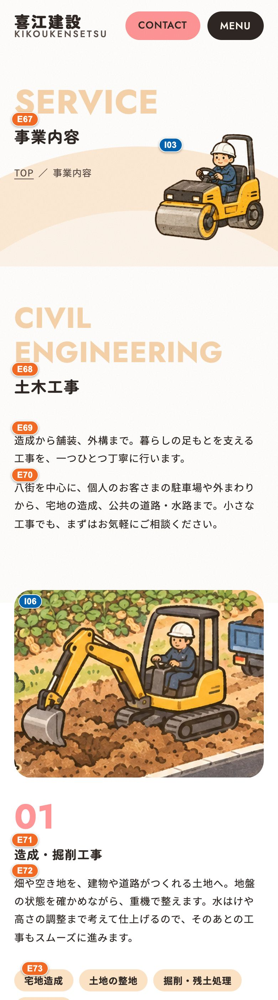
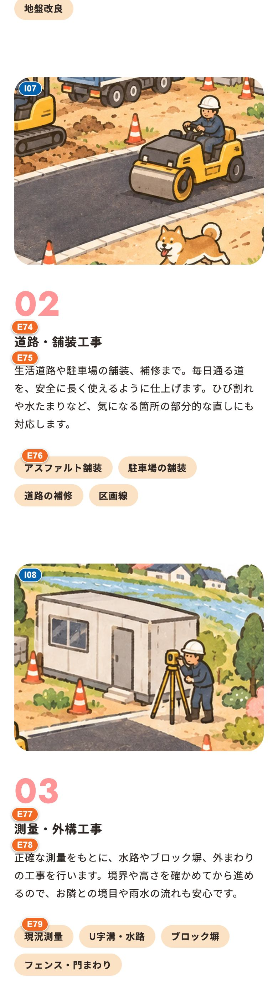
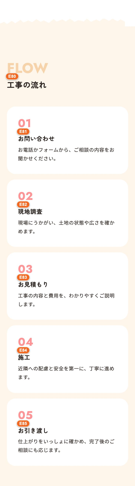
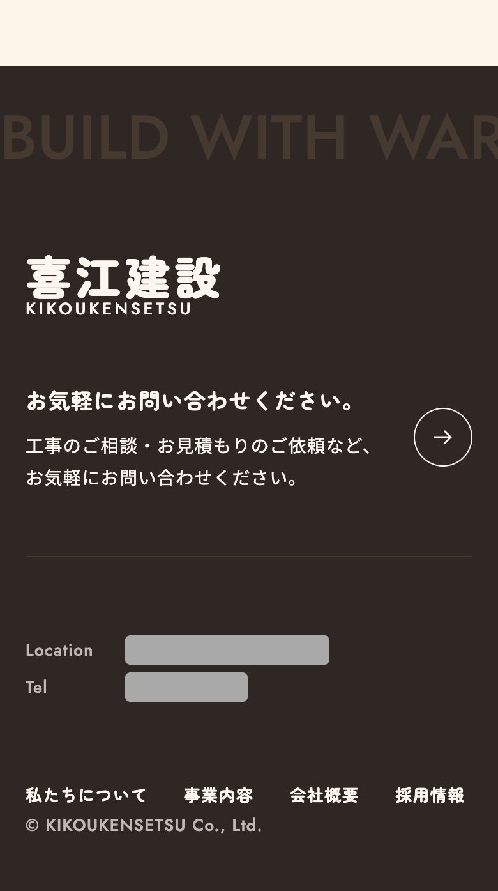
PC（幅1280） 上から順に3枚に区切っています
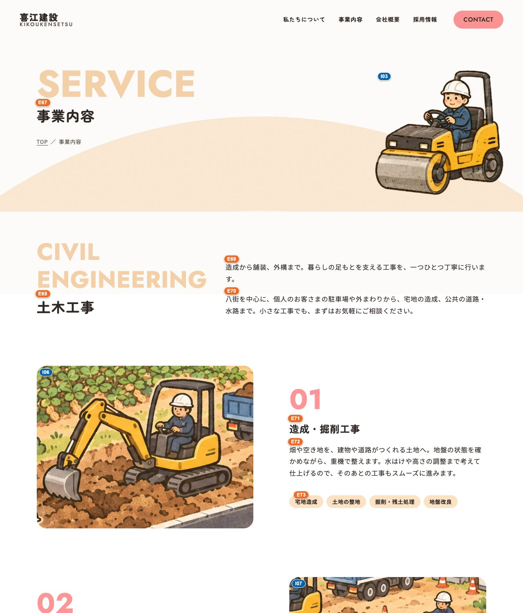
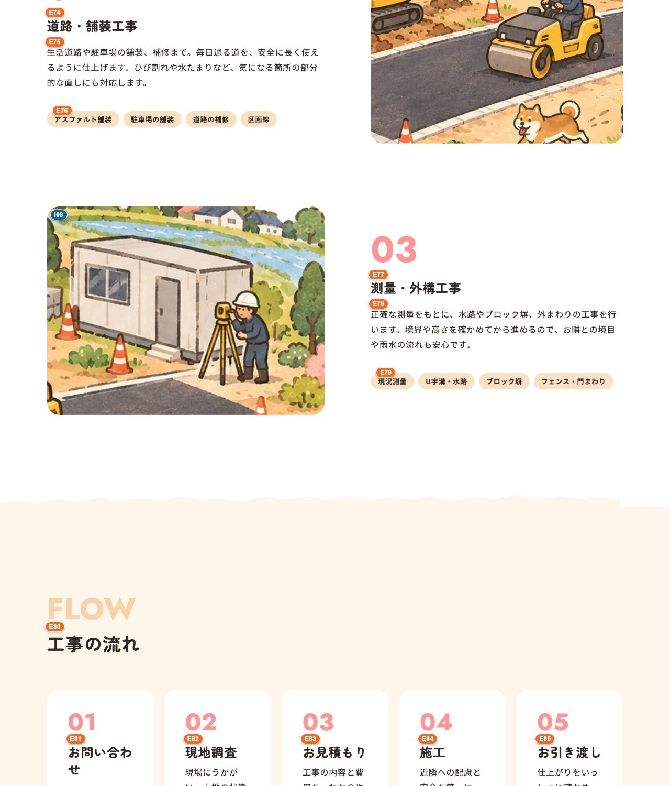
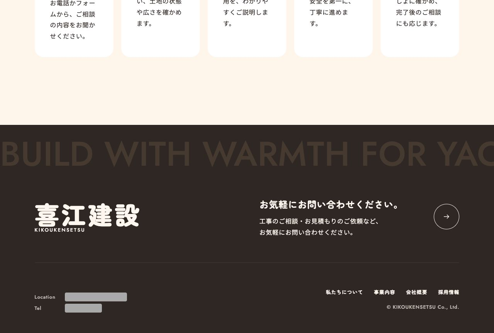
| 番号 | 場所 | 今の文言（冒頭） | 文字数の目安 |
|---|---|---|---|
| E67 | ページの見出しとパンくず見出しとパンくずの2か所を同じ言葉にメニューの名前・ページの題名(<title>)と合わせると分かりやすい上の英字は飾り | 事業内容／事業内容 | 見出し：現状4字→7字まで パンくず(TOP／の後)：現状4字→8字まで |
| E68 | 土木工事の見出し | 土木工事 | 現状4字→10字まで |
| E69 | 土木工事の本文1<span class="cl">〜</span> は折り返しのまとまり。タグは残し、中の文字だけ直す | 造成から舗装、外構まで。暮らしの足もとを支え… | 現状40字→安全42字(限界なし) |
| E70 | 土木工事の本文2<span class="cl">〜</span> は折り返しのまとまり。タグは残し、中の文字だけ直す | 八街を中心に、個人のお客さまの駐車場や外まわ… | 現状66字→安全69字(限界なし) |
| E71 | 工事01の小見出しTOPの SERVICE の小見出しと同じ言葉 | 造成・掘削工事 | 現状7字→安全18字(限界なし) |
| E72 | 工事01の本文<span class="cl">〜</span> は折り返しのまとまり。タグは残し、中の文字だけ直す | 畑や空き地を、建物や道路がつくれる土地へ。地… | 現状81字→安全84字(限界なし) |
| E73 | 工事01の札(主な工事・4つ)札を増やす・減らすときは <li>〜</li> ごと | 宅地造成／土地の整地／掘削・残土処理／地盤改良 | 札1：現状4字→安全21字(限界なし) 札2：現状5字→安全21字(限界なし) 札3：現状7字→安全21字(限界なし) 札4：現状4字→安全21字(限界なし) |
| E74 | 工事02の小見出しTOPの SERVICE の小見出しと同じ言葉 | 道路・舗装工事 | 現状7字→安全18字(限界なし) |
| E75 | 工事02の本文<span class="cl">〜</span> は折り返しのまとまり。タグは残し、中の文字だけ直す | 生活道路や駐車場の舗装、補修まで。毎日通る道… | 現状74字→安全84字(限界なし) |
| E76 | 工事02の札(主な工事・4つ)札を増やす・減らすときは <li>〜</li> ごと | アスファルト舗装／駐車場の舗装／道路の補修／… | 札1：現状8字→安全21字(限界なし) 札2：現状6字→安全21字(限界なし) 札3：現状5字→安全21字(限界なし) 札4：現状3字→安全21字(限界なし) |
| E77 | 工事03の小見出しTOPの SERVICE の小見出しと同じ言葉 | 測量・外構工事 | 現状7字→安全18字(限界なし) |
| E78 | 工事03の本文<span class="cl">〜</span> は折り返しのまとまり。タグは残し、中の文字だけ直す | 正確な測量をもとに、水路やブロック塀、外まわ… | 現状68字→安全69字(限界なし) |
| E79 | 工事03の札(主な工事・4つ)札を増やす・減らすときは <li>〜</li> ごと | 現況測量／U字溝・水路／ブロック塀／フェンス… | 札1：現状4字→安全21字(限界なし) 札2：現状6字→安全21字(限界なし) 札3：現状5字→安全21字(限界なし) 札4：現状9字→安全21字(限界なし) |
| E80 | 工事の流れの見出し | 工事の流れ | 現状5字→安全13字(限界なし) |
| E81 | 工事の流れ01(小見出し・文)1行に並んでいるので、小見出しと文のタグ(<h3>・<p>)は残す | お問い合わせ／お電話かフォームから、ご相談の… | 小見出し：現状6字→安全10字(限界なし) 文：現状27字→安全28字(限界なし) |
| E82 | 工事の流れ02(小見出し・文)1行に並んでいるので、小見出しと文のタグ(<h3>・<p>)は残す | 現地調査／現場にうかがい、土地の状態や広さを… | 小見出し：現状4字→安全5字(限界なし) 文：現状23字→安全27字(限界なし) |
| E83 | 工事の流れ03(小見出し・文)1行に並んでいるので、小見出しと文のタグ(<h3>・<p>)は残す | お見積もり／工事の内容と費用を、わかりやすく… | 小見出し：現状5字(安全はこのまま・限界なし) 文：現状23字→安全28字(限界なし) |
| E84 | 工事の流れ04(小見出し・文)1行に並んでいるので、小見出しと文のタグ(<h3>・<p>)は残す | 施工／近隣への配慮と安全を第一に、丁寧に進め… | 小見出し：現状2字→安全5字(限界なし) 文：現状22字→安全27字(限界なし) |
| E85 | 工事の流れ05(小見出し・文)1行に並んでいるので、小見出しと文のタグ(<h3>・<p>)は残す | お引き渡し／仕上がりをいっしょに確かめ、完了… | 小見出し：現状5字(安全はこのまま・限界なし) 文：現状28字(安全はこのまま・限界なし) |
| 番号 | 場所 | ファイル | 縦横比・サイズ |
|---|---|---|---|
| I03 | ページ上部のイラスト | assets/chara_roller.webp | 縦横比 横長 約1.02:1・推奨 441×431px(元と同じ)・背景が透明なWebP・容量45KB表示は最大 約314×307px(3つの画面の大きさで測った中で最大)人物などの切り抜きは、背景を透明にした画像で作る(背景が付いていると四角く見える)同じファイルが TOP(3つの円(上)のイラスト)・私たちについて(強み01のイラスト) でも使われている(1回の差し替えで全部変わる) |
| I06 | 工事01の写真 | assets/svc_01.webp | 縦横比 4:3・推奨 800×600px(元と同じ)・WebP・容量80KB表示は最大 約530×398px(3つの画面の大きさで測った中で最大)枠の縦横比は4:3・写真は枠に合わせて中央が自動で切り取られる同じファイルが TOP(SERVICE の写真1) でも使われている(1回の差し替えで全部変わる) |
| I07 | 工事02の写真 | assets/svc_02.webp | 縦横比 4:3・推奨 800×600px(元と同じ)・WebP・容量82KB表示は最大 約482×362px(3つの画面の大きさで測った中で最大)枠の縦横比は4:3・写真は枠に合わせて中央が自動で切り取られる同じファイルが TOP(SERVICE の写真2) でも使われている(1回の差し替えで全部変わる) |
| I08 | 工事03の写真 | assets/svc_03.webp | 縦横比 4:3・推奨 800×600px(元と同じ)・WebP・容量65KB表示は最大 約530×398px(3つの画面の大きさで測った中で最大)枠の縦横比は4:3・写真は枠に合わせて中央が自動で切り取られる同じファイルが TOP(SERVICE の写真3) でも使われている(1回の差し替えで全部変わる) |
ファイル：company/index.html
スマホ（幅390） 上から順に2枚に区切っています
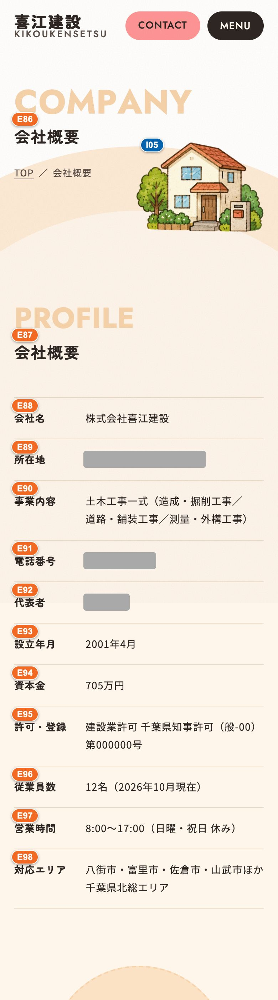
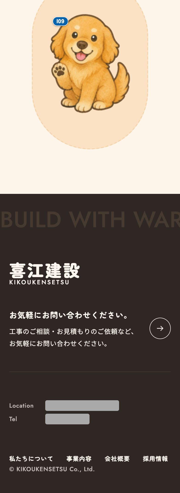
PC（幅1280） 上から順に2枚に区切っています
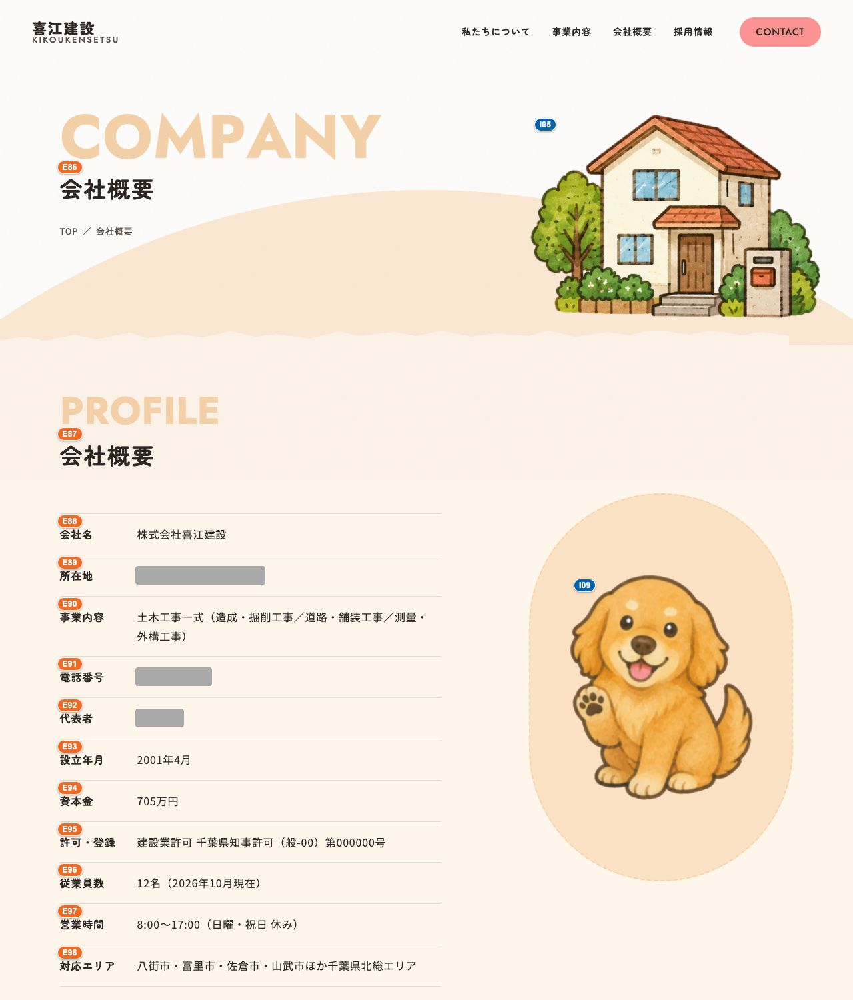
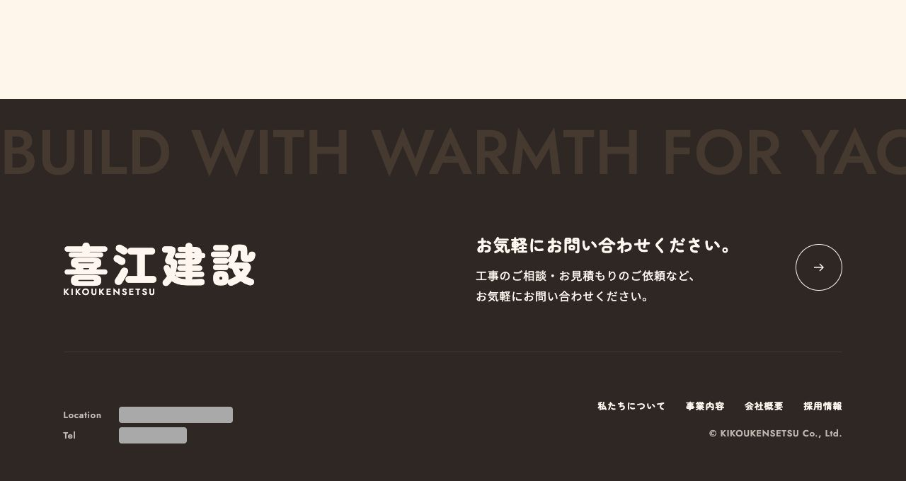
| 番号 | 場所 | 今の文言（冒頭） | 文字数の目安 |
|---|---|---|---|
| E86 | ページの見出しとパンくず見出しとパンくずの2か所を同じ言葉にメニューの名前・ページの題名(<title>)と合わせると分かりやすい上の英字は飾り | 会社概要／会社概要 | 見出し：現状4字→6字まで パンくず(TOP／の後)：現状4字→7字まで |
| E87 | 会社概要の見出し | 会社概要 | 現状4字→安全13字(限界なし) |
| E88 | 表「会社名」TOPの会社概要の表にも同じ項目がある行を増やす・減らすときは <div class="info-table__row">〜</div> の1行ごと | 会社名／株式会社喜江建設 | 項目名：現状3字→安全5字(限界なし) 内容：現状8字→安全14字(限界なし) |
| E89 | 表「所在地」TOPの会社概要の表にも同じ項目がある | 所在地／（所在地） | 項目名：現状3字→安全5字(限界なし) 内容：現状14字→安全17字(限界なし) |
| E90 | 表「事業内容」 | 事業内容／土木工事一式（造成・掘削工事／道路… | 項目名：現状4字→安全5字(限界なし) 内容：現状31字→安全32字(限界なし) |
| E91 | 表「電話番号」TOPの会社概要の表にも同じ項目がある | 電話番号／（電話番号） | 項目名：現状4字→安全5字(限界なし) 内容：現状12字→20字まで |
| E92 | 表「代表者」TOPの会社概要の表にも同じ項目がある | 代表者／（代表者名） | 項目名：現状3字→安全5字(限界なし) 内容：現状4字→安全14字(限界なし) |
| E93 | 表「設立年月」 | 設立年月／2001年4月 | 項目名：現状4字→安全5字(限界なし) 内容：現状7字→安全17字(限界なし) |
| E94 | 表「資本金」 | 資本金／705万円 | 項目名：現状3字→安全5字(限界なし) 内容：現状5字→安全16字(限界なし) |
| E95 | 表「許可・登録」 | 許可・登録／建設業許可 千葉県知事許可（般-… | 項目名：現状5字(安全はこのまま・限界なし) 内容：現状26字→安全30字(限界なし) |
| E96 | 表「従業員数」 | 従業員数／12名（2026年10月現在） | 項目名：現状4字→安全5字(限界なし) 内容：現状15字→安全18字(限界なし) |
| E97 | 表「営業時間」 | 営業時間／8:00〜17:00（日曜・祝日 … | 項目名：現状4字→安全5字(限界なし) 内容：現状19字(安全はこのまま・限界なし) |
| E98 | 表「対応エリア」 | 対応エリア／八街市・富里市・佐倉市・山武市ほ… | 項目名：現状5字(安全はこのまま・限界なし) 内容：現状25字→安全26字(限界なし) |
| 番号 | 場所 | ファイル | 縦横比・サイズ |
|---|---|---|---|
| I05 | ページ上部のイラスト | assets/chara_house.webp | 縦横比 横長 約1.42:1・推奨 500×352px(元と同じ)・背景が透明なWebP・容量52KB表示は最大 約436×307px(3つの画面の大きさで測った中で最大)人物などの切り抜きは、背景を透明にした画像で作る(背景が付いていると四角く見える)同じファイルが TOP(3つの円(右)のイラスト) でも使われている(1回の差し替えで全部変わる) |
| I09 | 看板犬 | assets/dog_retriever.webp | 縦横比 縦長 約1:1.23・推奨 520×641px(元と同じ)・背景が透明なWebP・容量42KB表示は最大 約275×338px(3つの画面の大きさで測った中で最大)人物などの切り抜きは、背景を透明にした画像で作る(背景が付いていると四角く見える)同じファイルが TOP(会社概要の看板犬) でも使われている(1回の差し替えで全部変わる) |
ファイル：contact/index.html
スマホ（幅390） 上から順に2枚に区切っています
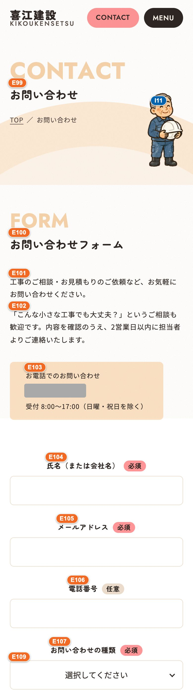
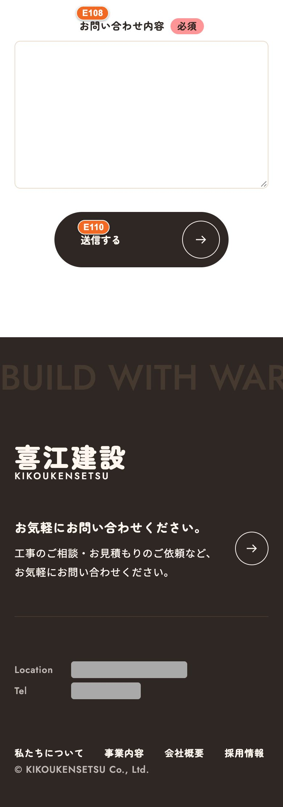
PC（幅1280） 上から順に2枚に区切っています
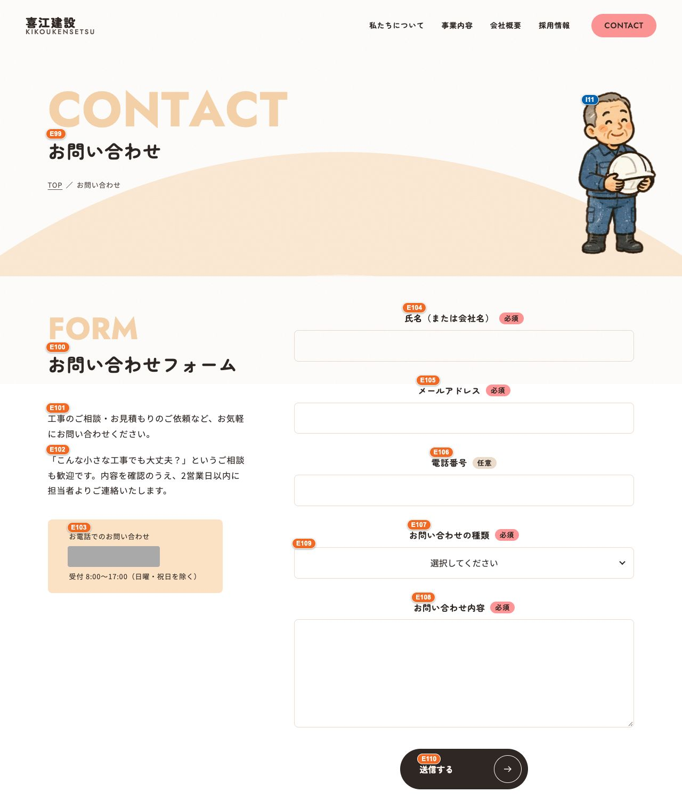
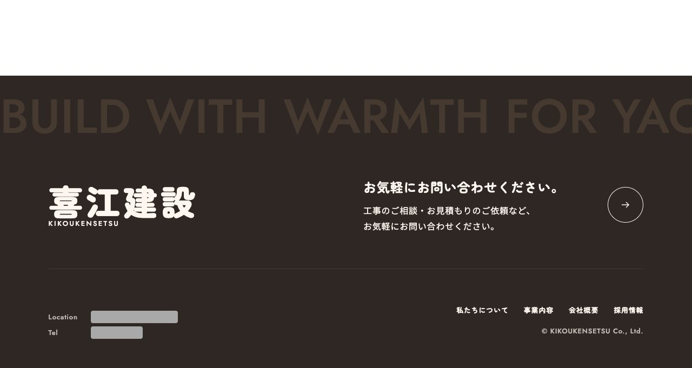
| 番号 | 場所 | 今の文言（冒頭） | 文字数の目安 |
|---|---|---|---|
| E99 | ページの見出しとパンくず見出しとパンくずの2か所を同じ言葉にメニューの名前・ページの題名(<title>)と合わせると分かりやすい上の英字は飾り | お問い合わせ／お問い合わせ | 見出し：現状6字→10字まで パンくず(TOP／の後)：現状6字→14字まで |
| E100 | フォームの見出し | お問い合わせフォーム | 現状10字(安全はこのまま・限界なし) |
| E101 | 本文1<span class="cl">〜</span> は折り返しのまとまり。タグは残し、中の文字だけ直すフッターの大きなボタンの説明文と同じ文 | 工事のご相談・お見積もりのご依頼など、お気軽… | 現状34字→安全42字(限界なし) |
| E102 | 本文2<span class="cl">〜</span> は折り返しのまとまり。タグは残し、中の文字だけ直す | 「こんな小さな工事でも大丈夫？」というご相談… | 現状58字→安全64字(限界なし) |
| E103 | 電話の案内(見出し・番号・受付時間)受付時間は会社概要ページの「営業時間」と合わせる | お電話でのお問い合わせ／（電話番号）／受付 … | 見出し：現状11字→安全18字(限界なし) 番号：現状12字→18字まで 受付時間：現状22字(安全はこのまま・限界なし) |
| E104 | フォームの項目名「氏名（または会社名）」後ろの「必須」「任意」の札(<span class="form__req">)は残すWordPress版のフォームは別の仕組み(Contact Form 7)で、そちらは担当者が直す | 氏名（または会社名） | 項目名：現状10字→安全18字(限界なし) |
| E105 | フォームの項目名「メールアドレス」後ろの「必須」「任意」の札(<span class="form__req">)は残すWordPress版のフォームは別の仕組み(Contact Form 7)で、そちらは担当者が直す | メールアドレス | 項目名：現状7字→安全18字(限界なし) |
| E106 | フォームの項目名「電話番号」後ろの「必須」「任意」の札(<span class="form__req">)は残すWordPress版のフォームは別の仕組み(Contact Form 7)で、そちらは担当者が直す | 電話番号 | 項目名：現状4字→安全18字(限界なし) |
| E107 | フォームの項目名「お問い合わせの種類」後ろの「必須」「任意」の札(<span class="form__req">)は残すWordPress版のフォームは別の仕組み(Contact Form 7)で、そちらは担当者が直す | お問い合わせの種類 | 項目名：現状9字→安全18字(限界なし) |
| E108 | フォームの項目名「お問い合わせ内容」後ろの「必須」「任意」の札(<span class="form__req">)は残すWordPress版のフォームは別の仕組み(Contact Form 7)で、そちらは担当者が直す | お問い合わせ内容 | 項目名：現状8字→安全18字(限界なし) |
| E109 | お問い合わせの種類の選択肢選択肢を増やす・減らすときは <option>〜</option> の1行ごと最初の「選択してください」の行(value="")は残すWordPress版は担当者が直す | サービスについて／お見積もりについて／採用に… | 実測なし｜選んだ後の欄の幅で切れることがある。今いちばん長い選択肢は17字。これより長くしない |
| E110 | 送信ボタンsvgの絵(<svg>〜</svg>)は消さない | 送信する | 現状4字→安全14字(限界なし) |
| 番号 | 場所 | ファイル | 縦横比・サイズ |
|---|---|---|---|
| I11 | ページ上部のイラスト | assets/chara_senior.webp | 縦横比 縦長 約1:2.09・推奨 191×399px(元と同じ)・背景が透明なWebP・容量23KB表示は最大 約147×307px(3つの画面の大きさで測った中で最大)人物などの切り抜きは、背景を透明にした画像で作る(背景が付いていると四角く見える)同じファイルが TOP(採用カードのイラスト(ベテラン)) でも使われている(1回の差し替えで全部変わる) |
ここにある文言・画像は、5つのファイル全部に同じものが入っています。
たとえばフッターの所在地（E22）を直すときは、index.html・about/index.html・service/index.html・company/index.html・contact/index.html の5つ全部で、同じ番号を探して同じように直してください。1つだけ直すと、ページによって表示が違ってしまいます。
PC：ヘッダー
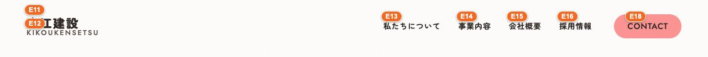
スマホ：ヘッダー・メニュー（右上の MENU を押した画面）・フッター
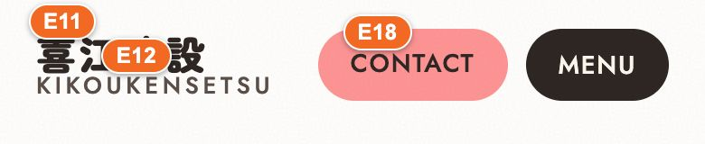
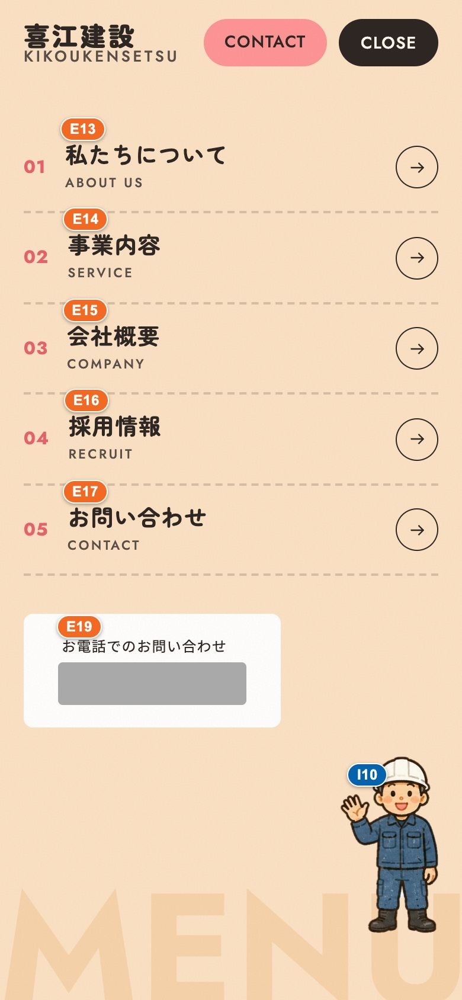
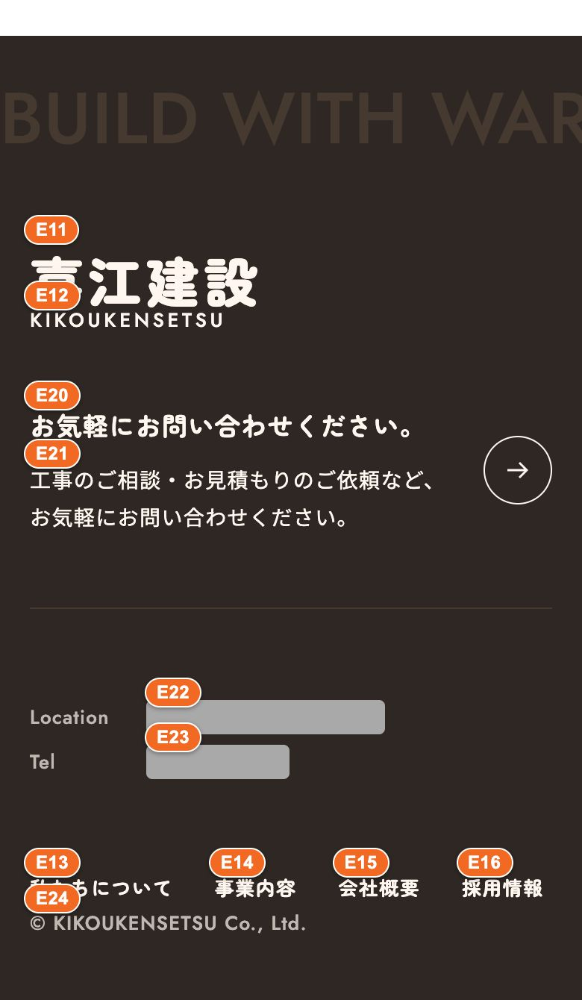
PC：フッター
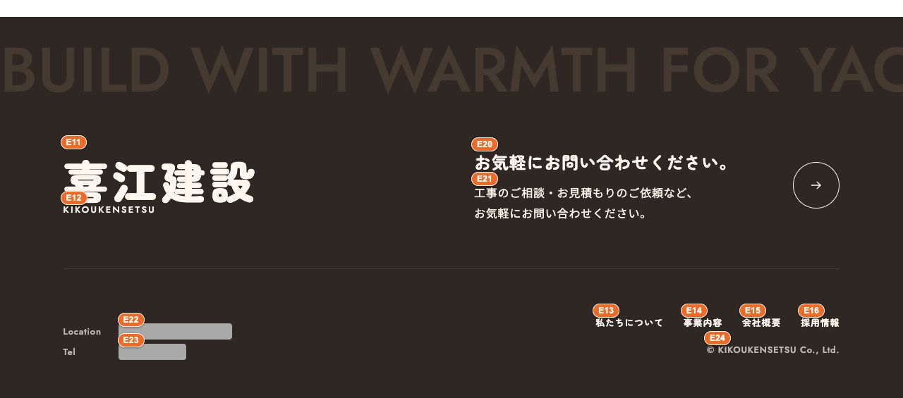
右上のボタンの「MENU」の文字は、押すと「CLOSE」に変わる仕組みのため、目印はありません。流れる英字（BUILD WITH WARMTH FOR YACHIMATA）は飾りです。
| 番号 | 場所 | 今の文言（冒頭） | 文字数の目安 |
|---|---|---|---|
| E11 | ロゴの文字(日本語)5つのファイル全部を同じように直すヘッダーとフッターの2か所 | 喜江建設 | 現状4字→7字まで |
| E12 | ロゴの文字(英字)5つのファイル全部を同じように直すヘッダーとフッターの2か所 | KIKOUKENSETSU | 現状13字→安全16字(限界38字) |
| E13 | メニュー「私たちについて」5つのファイル全部を同じように直すPCのヘッダー・スマホのメニュー・フッターの3か所スマホのメニューの英字(ABOUT US)は飾りなので変えないリンク先(href)は変えない | 私たちについて | 現状7字→安全11字(限界なし) |
| E14 | メニュー「事業内容」5つのファイル全部を同じように直すPCのヘッダー・スマホのメニュー・フッターの3か所スマホのメニューの英字(SERVICE)は飾りなので変えないリンク先(href)は変えない | 事業内容 | 現状4字→安全11字(限界なし) |
| E15 | メニュー「会社概要」5つのファイル全部を同じように直すPCのヘッダー・スマホのメニュー・フッターの3か所スマホのメニューの英字(COMPANY)は飾りなので変えないリンク先(href)は変えない | 会社概要 | 現状4字→安全11字(限界35字) |
| E16 | メニュー「採用情報」5つのファイル全部を同じように直すPCのヘッダー・スマホのメニュー・フッターの3か所スマホのメニューの英字(RECRUIT)は飾りなので変えないリンク先(href)は変えない行き先は採用サイト(別のサイト) | 採用情報 | 現状4字→11字まで |
| E17 | メニュー「お問い合わせ」(スマホのメニューだけ)5つのファイル全部を同じように直す英字(CONTACT)は飾りなので変えない | お問い合わせ | スマホのメニュー：現状6字→10字まで |
| E18 | 右上のボタン「CONTACT」5つのファイル全部を同じように直す | CONTACT | 現状7字→安全10字(限界21字) |
| E19 | スマホのメニューの電話(見出し・番号)5つのファイル全部を同じように直す番号を変えるときは、同じ行の href="tel:〜" の数字(ハイフンなし)も同じ番号に電話番号はほかに フッター・TOPの会社概要・会社概要ページ・お問い合わせページ にもある | お電話でのお問い合わせ／（電話番号） | 見出し：現状11字→16字まで 番号：現状12字→14字まで |
| E20 | フッターの大きなボタンの見出し5つのファイル全部を同じように直す<span class="cl">〜</span> は折り返しのまとまり。タグは残し、中の文字だけ直す | お気軽にお問い合わせください。 | 現状15字→安全16字(限界なし) |
| E21 | フッターの大きなボタンの説明文5つのファイル全部を同じように直す<span class="cl">〜</span> は折り返しのまとまり。タグは残し、中の文字だけ直すお問い合わせページの本文1(E番号は表を参照)と同じ文 | 工事のご相談・お見積もりのご依頼など、お気軽… | 現状34字→安全36字(限界なし) |
| E22 | フッターの所在地5つのファイル全部を同じように直す左の英字(Location)は飾り所在地はほかに TOPの会社概要・会社概要ページ にもある | （所在地） | 現状14字→安全20字(限界なし) |
| E23 | フッターの電話番号5つのファイル全部を同じように直す電話番号はほかに スマホのメニュー・TOPの会社概要・会社概要ページ・お問い合わせページ にもある | （電話番号） | 現状12字→安全22字(限界なし) |
| E24 | フッターのコピーライト5つのファイル全部を同じように直す | © KIKOUKENSETSU Co., L… | 現状22字→安全31字(限界なし) |
| 番号 | 場所 | ファイル | 縦横比・サイズ |
|---|---|---|---|
| I10 | スマホのメニューの中のイラスト | assets/chara_wave.webp | 縦横比 縦長 約1:1.82・推奨 219×398px(元と同じ)・背景が透明なWebP・容量24KB表示は最大 約113×204px(3つの画面の大きさで測った中で最大)人物などの切り抜きは、背景を透明にした画像で作る(背景が付いていると四角く見える)同じファイルが TOP(採用カードのイラスト(手を振る若手)) でも使われている(1回の差し替えで全部変わる) |
ブラウザのタブや検索結果に出る文言です。サイトの画面には出ません。ページ（ファイル）ごとに別の文が入っています。
シェアした時の表示（OGP）について
LINE・SNSでシェアした時の見出し・説明・画像（OGP）は、この静的サイト版のファイルには入っていません。本番（WordPress版）ではテーマのファイルで、各ページの題名と説明文（下の表と同じ文）が自動で入り、画像は assets/ogp.jpg（1200×630px・JPG）を使っています。変えたいときは担当者にご相談ください。
| 番号 | 場所 | 今の文言（冒頭） | 文字数の目安 |
|---|---|---|---|
| E01 | TOPページ：ブラウザのタブ名・検索結果の見出し(<title>) | 株式会社喜江建設 | 画面の見た目には影響しない。検索結果で切れにくいのは30字前後まで(一般的な目安・実測ではない) |
| E02 | TOPページ：検索結果の説明文(description) | 千葉県八街市の株式会社喜江建設のホームページ… | 画面の見た目には影響しない。検索結果で切れにくいのは120字前後まで(一般的な目安・実測ではない) |
| E03 | 私たちについてページ：ブラウザのタブ名・検索結果の見出し(<title>)「ページ名株式会社喜江建設」の形をそろえる | 私たちについて｜株式会社喜江建設 | 画面の見た目には影響しない。検索結果で切れにくいのは30字前後まで(一般的な目安・実測ではない) |
| E04 | 私たちについてページ：検索結果の説明文(description) | 株式会社喜江建設の想い・代表挨拶・強みをご紹… | 画面の見た目には影響しない。検索結果で切れにくいのは120字前後まで(一般的な目安・実測ではない) |
| E05 | 事業内容ページ：ブラウザのタブ名・検索結果の見出し(<title>)「ページ名株式会社喜江建設」の形をそろえる | 事業内容｜株式会社喜江建設 | 画面の見た目には影響しない。検索結果で切れにくいのは30字前後まで(一般的な目安・実測ではない) |
| E06 | 事業内容ページ：検索結果の説明文(description) | 株式会社喜江建設の土木工事についてご紹介します。 | 画面の見た目には影響しない。検索結果で切れにくいのは120字前後まで(一般的な目安・実測ではない) |
| E07 | 会社概要ページ：ブラウザのタブ名・検索結果の見出し(<title>)「ページ名株式会社喜江建設」の形をそろえる | 会社概要｜株式会社喜江建設 | 画面の見た目には影響しない。検索結果で切れにくいのは30字前後まで(一般的な目安・実測ではない) |
| E08 | 会社概要ページ：検索結果の説明文(description) | 株式会社喜江建設の会社概要です。 | 画面の見た目には影響しない。検索結果で切れにくいのは120字前後まで(一般的な目安・実測ではない) |
| E09 | お問い合わせページ：ブラウザのタブ名・検索結果の見出し(<title>)「ページ名株式会社喜江建設」の形をそろえる | お問い合わせ｜株式会社喜江建設 | 画面の見た目には影響しない。検索結果で切れにくいのは30字前後まで(一般的な目安・実測ではない) |
| E10 | お問い合わせページ：検索結果の説明文(description) | 株式会社喜江建設へのお問い合わせはこちらから。 | 画面の見た目には影響しない。検索結果で切れにくいのは120字前後まで(一般的な目安・実測ではない) |
| 番号 | 場所 | ファイル | 縦横比・サイズ |
|---|---|---|---|
| I01 | ブラウザのタブの小さな絵(ファビコン)・スマホのホーム画面のアイコン | favicon.ico ほか3つ | 正方形1:1の4つの組：favicon.ico（48×48px・5KB）・favicon-32.png（32×32px・2KB）・favicon-16.png（16×16px・1KB）・apple-touch-icon.png（180×180px・7KB）4つのファイル(favicon.ico・favicon-32.png・favicon-16.png・apple-touch-icon.png)の組。作り直しは担当者に |
< と > で囲まれた部分や、class="…"・href="…" の中身は、見た目や動き、リンク先を決める部品です。消したり直したりすると、文字が出なくなったり、レイアウトが崩れたりします。<br>・<wbr>・<span class="cl">・<span class="nb"> を消さない。折り返しの位置を決める部品です。<svg>…）を消さない。ボタンの矢印や波線などの絵です。<!-- 〜 -->）を消さない。消すと、次に探せなくなります。style.css・base.css・tokens.css・site.js は開かない・直さないでください。直したページを、上から下までスクロールして、次を確認してください。
実際のスマホで見るときは、担当者に修正後のフォルダを渡してください。
お問い合わせ先
担当：
連絡先：